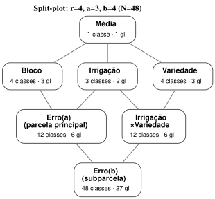
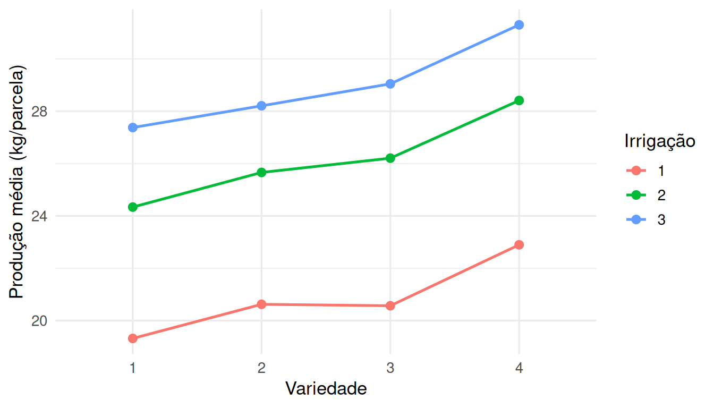

4.6 Parcelas subdivididas (split-plot)
Todas as seções anteriores deste capítulo assumem que um único mecanismo de aleatorização atribui tratamentos a unidades experimentais. Em muitos experimentos de campo — a origem histórica deste delineamento, em Rothamsted, nos anos 1920 e 1930 (Yates, 1937) —, isso é logisticamente inviável: certos fatores só podem ser aplicados a parcelas grandes (um sistema de irrigação cobre uma faixa inteira de terreno; não há como irrigar diferentemente cada metro quadrado), enquanto outros fatores variam livremente em parcelas pequenas dentro de cada parcela grande (a variedade plantada pode mudar a cada poucos metros). O delineamento em parcelas subdivididas (split-plot) formaliza exatamente essa restrição prática — não é uma escolha de conveniência estatística, é a estrutura que o próprio processo físico de aleatorização impõe (Montgomery, 2017).
Um experimento compara 3 métodos de irrigação e 4 variedades de sorgo. O terreno é dividido em 4 blocos (homogêneos internamente); dentro de cada bloco, o método de irrigação é sorteado a 3 parcelas principais — faixas grandes de terra, porque cada sistema de irrigação exige uma faixa contígua. Cada parcela principal é então subdividida em 4 subparcelas, e a variedade é sorteada às subparcelas dentro de cada parcela principal. Produção (kg/parcela) é medida em cada subparcela.
4.6.1 Dois erros experimentais, não um
A restrição prática acima tem uma consequência estatística direta: há dois processos de aleatorização independentes, um em cada nível (aleatorizar irrigação às parcelas principais dentro de cada bloco; aleatorizar variedade às subparcelas dentro de cada parcela principal) — e cada aleatorização gera seu próprio erro experimental. O modelo precisa de dois termos de erro distintos, não um:
\[ Y_{ijk} = \mu + \rho_i + \alpha_j + \underbrace{\delta_{ij}}_{\text{erro da parcela principal}} + \beta_k + (\alpha\beta)_{jk} + \underbrace{\varepsilon_{ijk}}_{\text{erro da subparcela}}, \]
com \(i=1,\ldots,r\) blocos, \(j=1,\ldots,a\) níveis do fator de parcela principal (irrigação), \(k=1,\ldots,b\) níveis do fator de subparcela (variedade), \(\delta_{ij}\overset{iid}\sim N(0,\sigma^2_\delta)\) o erro da parcela principal (a variação entre parcelas principais dentro do mesmo bloco, não explicada por irrigação) e \(\varepsilon_{ijk}\overset{iid}\sim N(0,\sigma^2_\varepsilon)\) o erro da subparcela (a variação entre subparcelas dentro da mesma parcela principal), independente de \(\delta_{ij}\). \(\rho_i\) (bloco) e \(\alpha_j\) (irrigação) são efeitos fixos sujeitos às restrições usuais de soma zero, assim como \(\beta_k\) (variedade) e \((\alpha\beta)_{jk}\) (interação).
nos_sp <- tibble(
termo = c("Média", "Bloco", "Irrigação", "Variedade", "Erro(a)\n(parcela principal)",
"Irrigação\n×Variedade", "Erro(b)\n(subparcela)"),
classes = c(1, 4, 3, 4, 4*3, 3*4, 4*3*4)
)
arestas_sp <- tibble(
de = c("Média", "Média", "Média", "Bloco", "Irrigação", "Irrigação", "Variedade",
"Erro(a)\n(parcela principal)", "Irrigação\n×Variedade"),
para = c("Bloco", "Irrigação", "Variedade", "Erro(a)\n(parcela principal)",
"Erro(a)\n(parcela principal)", "Irrigação\n×Variedade",
"Irrigação\n×Variedade", "Erro(b)\n(subparcela)", "Erro(b)\n(subparcela)")
)
knitr::include_graphics(
hasse_svg(nos_sp, arestas_sp,
arquivo = "figuras/hasse/split-plot.svg",
titulo = "Split-plot: r=4, a=3, b=4 (N=48)",
tamanho = c(5.5, 4))
)
Figura 4.4: Diagrama de Hasse do split-plot: r=4 blocos, a=3 métodos de irrigação (parcela principal), b=4 variedades (subparcela), N=48. Note os DOIS nós de erro – Erro(a), que fecha o estrato da parcela principal, e Erro(b), que fecha o estrato da subparcela – em vez do único nó de Erro do DBCA (Figura anterior).
A soma de todos os \(gl\) é \(1+3+2+3+6+6+27=48=N\) — dois nós de erro em vez de um, exatamente porque há dois estratos de aleatorização, cada um com sua própria variação residual. \(gl(\text{Erro(a)}) = ra - 1 - gl(\text{Bloco}) - gl(\text{Irrigação}) = 12-1-3-2=6=(r-1)(a-1)\); \(gl(\text{Erro(b)}) = rab - [\text{soma dos } gl \text{ de todos os outros seis nós}] = 48-21=27=a(r-1)(b-1)\).
4.6.2 Por que o teste de irrigação usa um erro diferente do teste de variedade
A esperança dos quadrados médios torna explícito por que dois erros são necessários, e não apenas uma curiosidade algébrica do diagrama:
\[ \mathbb E[QM_{\text{Erro(a)}}] = \sigma^2_\varepsilon + b\,\sigma^2_\delta, \qquad \mathbb E[QM_{\text{Irrigação}}] = \sigma^2_\varepsilon + b\,\sigma^2_\delta + \frac{rb}{a-1}\sum_j \alpha_j^2, \] \[ \mathbb E[QM_{\text{Erro(b)}}] = \sigma^2_\varepsilon, \qquad \mathbb E[QM_{\text{Variedade}}] = \sigma^2_\varepsilon + \frac{ra}{b-1}\sum_k \beta_k^2. \]
O termo \(b\,\sigma^2_\delta\) aparece em \(QM_{\text{Irrigação}}\) e em \(QM_{\text{Erro(a)}}\), mas não em \(QM_{\text{Erro(b)}}\): por isso o teste de irrigação precisa usar \(F=QM_{\text{Irrigação}}/QM_{\text{Erro(a)}}\), nunca \(QM_{\text{Erro(b)}}\) — usar o erro errado no denominador (um engano comum, fácil de cometer se o código não especificar a estrutura de erro) infla artificialmente a estatística \(F\) do fator de parcela principal, porque \(QM_{\text{Erro(b)}}\) não contém a variação entre parcelas principais que também afeta \(QM_{\text{Irrigação}}\). O teste de variedade (e da interação) usa corretamente \(QM_{\text{Erro(b)}}\), sem \(\sigma^2_\delta\) em nenhum dos dois lados da razão.
Consequência prática, não só teórica: como \(\sigma^2_\delta\) tipicamente excede \(\sigma^2_\varepsilon\) (parcelas principais variam mais entre si do que subparcelas dentro da mesma parcela principal), o fator de parcela principal é estimado com menos precisão que o fator de subparcela — mesmo com o mesmo número de observações. É um trade-off deliberado do delineamento: ganha-se viabilidade logística ao custo de precisão no fator que a logística obrigou a ficar na parcela principal.
aov(..., Error(bloco/irrigacao))set.seed(48)
r <- 4; a <- 3; b <- 4
dados_sp <- expand_grid(variedade = factor(1:b), irrigacao = factor(1:a), bloco = factor(1:r))
efeito_irrig <- c(0, 3, 6)[dados_sp$irrigacao]
efeito_var <- c(0, 1, 2, 4)[dados_sp$variedade]
erro_a <- rnorm(r * a, 0, 2)[interaction(dados_sp$bloco, dados_sp$irrigacao, drop = TRUE) %>% as.integer()]
dados_sp$producao <- 20 + efeito_irrig + efeito_var + erro_a + rnorm(nrow(dados_sp), 0, 1)
mod_sp <- aov(producao ~ irrigacao * variedade + Error(bloco/irrigacao), data = dados_sp)
summary(mod_sp)##
## Error: bloco
## Df Sum Sq Mean Sq F value Pr(>F)
## Residuals 3 121.5 40.49
##
## Error: bloco:irrigacao
## Df Sum Sq Mean Sq F value Pr(>F)
## irrigacao 2 545.4 272.68 13.26 0.00628 **
## Residuals 6 123.4 20.57
## ---
## Signif. codes: 0 '***' 0.001 '**' 0.01 '*' 0.05 '.' 0.1 ' ' 1
##
## Error: Within
## Df Sum Sq Mean Sq F value Pr(>F)
## variedade 3 94.19 31.398 31.329 6.1e-09 ***
## irrigacao:variedade 6 1.25 0.208 0.208 0.971
## Residuals 27 27.06 1.002
## ---
## Signif. codes: 0 '***' 0.001 '**' 0.01 '*' 0.05 '.' 0.1 ' ' 1Os graus de liberdade batem exatamente com o diagrama de Hasse acima: 3 (bloco), 2 e 6
(irrigação e seu erro, no estrato bloco:irrigacao), e 3, 6, 27 (variedade, interação e o erro de
subparcela, no estrato Within) — o Error(bloco/irrigacao) do R é a declaração explícita dos
dois estratos de aleatorização do diagrama, não uma opção de sintaxe arbitrária.

Figura 4.5: Produção de sorgo por variedade, separada por método de irrigação. Retas quase paralelas entre os três painéis indicam ausência de interação irrigação-variedade – consistente com o p-valor não significativo da interação na tabela acima.
Neste conjunto de dados simulado, irrigação é significativa (\(F_{2,6}=13.3\), \(p=0.006\)) mas testada com apenas 6 gl de erro; variedade é fortemente significativa (\(F_{3,27}=31.3\), \(p<0{,}001\)), testada com 27 gl de erro — precisão bem maior, exatamente o padrão que a análise de \(\mathbb E[QM]\) previu. A interação não é significativa (\(p=0.97\)), visível no gráfico como retas aproximadamente paralelas entre os três níveis de irrigação.